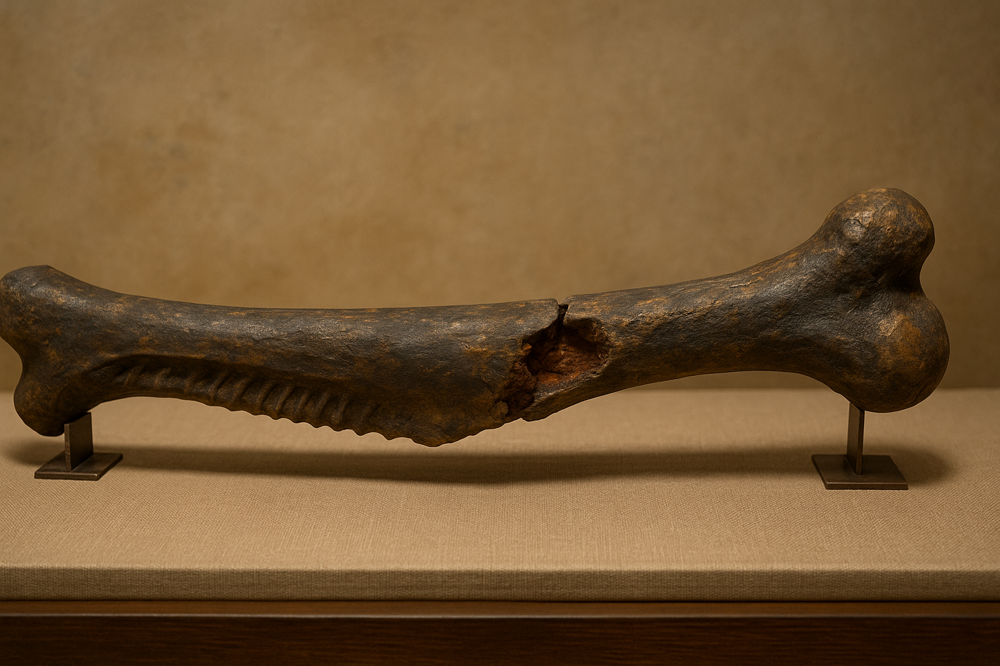
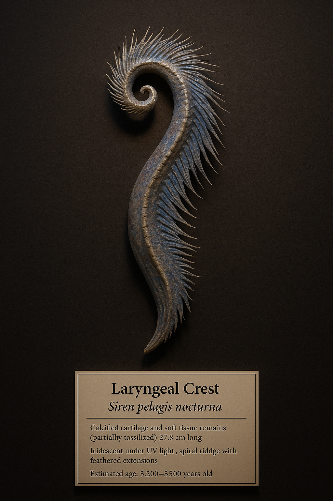

Welcome to the Vault of Wonders
Where relics breathe with the echoes of ages past. Step into the shadows between history and myth, and behold artifacts once cradled by heroes, feared by kings, and coveted by the unseen. Each piece tells a story woven from truth and tale—inviting you to uncover the mysteries they still guard.
Dragon: Ventral Rib Fossil – Draconis Altiventris

Material: Fossilized dragon bone (calcium-phosphate with trace ferrosilicate inclusions).
Size/Weight/Shape: 1.34 meters long; approx. 19.7 kg; slightly curved with ridged underside and thickened joint head.
Physical Properties: Dense fossil structure; dark ochre and slate-gray coloration; magnetic resonance shows marrow cavity partially mineralized.
Estimated Age: 11,600–11,850 years old; radiocarbon dating confirmed from trapped organic tissue within bone matrix.
Preservation State: Partial but exceptional; fractured at midpoint with exposed marrow, ideal for sampling.
Location Found: Windhollow Trench, Southern Caucasus; embedded in compacted ash sediment, stratigraphically linked to late Pleistocene fire layer.
Likely Purpose: Biological—part of the thoracic support structure enabling breath compression, possibly linked to combustion-based defense.
Evidence of Use: Microscopic pitting and scorched bone fluting suggest internal ignition system or extreme heat exposure from within.
Manufacture Clues: None; natural anatomical formation with organic cell structure partially preserved in marrow region.
Found With: Clustered with other skeletal elements including talon cores, vertebrae, and a partially intact skull crest.
Burial or Habitat Context: Deep fissure layer beneath volcanic ash—possibly a natural death site or sudden burial from pyroclastic event.
Symbolism: Nearby cave paintings (30m away) depict winged reptilian figures surrounded by fire halos, suggesting this specimen’s cultural significance to early inhabitants.
Comparison: Closely resembles theoretical dragon morphology proposed in the Calder-Roth Draconic Index; shares skeletal features with aerial reptiles, though scaled much larger and with heat-adapted bone textures.
Siren: Laryngeal Crest of Siren Pelagis Nocturna

Material: Calcified cartilage and soft tissue remains (partially fossilized), with trace bioluminescent protein deposits.
Size/Weight/Shape: 27.3 cm long; 4.1 cm wide; approx. 620 grams; gently spiraled ridge with feathered extensions and fine ridged interior lining.
Physical Properties: Iridescent under UV light; semi-flexible cartilage preserved in salt-locked matrix; soft tissue partially desiccated but intact.
Estimated Age: 5,300–5,500 years old; carbon-dated via trapped organic sediment and associated kelp-root debris.
Preservation State: Partial but remarkable; preserved by deep-sea pressure and mineral sealing in collapsed coastal trench.
Location Found: Pelagos Trench Shelf, Aegean Sea (Depth of 942m); discovered inside submerged limestone alcove with tidal seal chamber.
Likely Purpose: Biological vocal organ—believed responsible for harmonic resonance used in long-distance siren song and potential hypnosis.
Evidence of Use: Residual lipid traces and fine vibration scarring suggest repeated use in high-frequency vocal projection.
Manufacture Clues: None—natural anatomical formation; internal ridging shows organic development patterns, not artificial crafting.
Found With: Located near five additional partial skeletal elements, including elongated phalanges and tail vertebrae; also recovered were iridescent shell fragments believed to be adornment or nesting material.
Burial or Habitat Context: Tidal cave chamber sealed by a collapsed reef system; no tools or human presence detected—suggesting natural siren habitat or death site.
Symbolism: The spiral shape echoes patterns found in coastal Neolithic cave art across Greece and Anatolia, hinting at reverence for oceanic voice or “sea spirits”.
Comparison: Unlike known marine life structures; partially resembles the echolocation chambers of toothed whales, but scaled for humanoid anatomy—closest mythical comparison is to the “Voicebone” described in pre-Hellenic funeral songs.